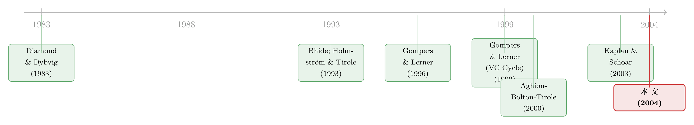

把「卖不掉」当成一道门槛：私募股权为什么主动给自己上锁
本文读的是 Lerner & Schoar (2004, Journal of Financial Economics)：私募股权的普通合伙人 (GP) 之所以在本已极难转让的合伙份额上，再额外加一道「不准转让」的锁，并不是为了治理，而是把流动性当成一个可选择的筛选变量——用它筛掉「口袋浅、会被流动性冲击逼着割肉」的投资者，从而在将来募集下一只基金时，少付一笔「柠檬溢价」。
1 一道反常识的题
先讲一个让人摸不着头脑的现象。
金融学里有一条几乎是常识的判断：流动性 (liquidity) 是好东西。一项资产越好卖，投资者越愿意持有，要求的回报也越低——这就是流动性溢价的另一面。于是按这条逻辑，谁要是主动把自己的资产弄得「更难卖」，谁就得倒贴一笔流动性补偿，凭白抬高自己的融资成本。
可偏偏在私募股权 (private equity) 这个角落里，我们看到的是反过来的事。美国的私募股权基金通常以有限合伙 (limited partnership) 的形式存在，出资的机构叫有限合伙人 (limited partners, LPs)，操盘的基金管理人叫普通合伙人 (general partners, GPs)。这些合伙份额本来就极难转让——每个 LP 出资动辄上千万美元，份额又大又不标准，二级市场薄得几乎不存在。然而 GP 们偏偏还要在合伙协议里，写上一条又一条远超证券法要求的转让限制条款，把这道本已半锁的门，又狠狠焊上几道。
这就奇怪了。份额已经卖不掉了，你再加一把锁干什么？这把锁锁住的，到底是谁？
这正是 Lerner 与 Schoar 这篇 2004 年发表在 JFE 上的论文要回答的问题。他们给这个现象起了个名字——「流动性之谜」(the illiquidity puzzle)。
2 旧答案：流动性是监督的代价
要理解这篇文章的新意，得先看看在它之前，经济学家是怎么替「为什么要牺牲流动性」找理由的。
过去的文献基本上都绕着一个核心打转：治理 (governance)。直觉是这样的——一只股票越好卖，大股东一旦对管理层不满，第一反应就是「用脚投票」，抛了走人，而不是留下来花力气监督。于是流动性越高，大股东监督的动力越弱（这是 Bhide, 1993 与 Aghion, Bolton & Tirole, 2000 一路的看法）。反过来，故意降低流动性、把大股东「焊」在公司里，就能逼他们承担起监督的职责。Holmström & Tirole (1993) 则从另一面说，流动性能改善业绩度量、让股价更有信息含量。一句话：流动性是一把双刃剑，而它的「坏」处，几乎都落在监督这件事上。
接着，一个自然的问题是：私募股权适用这套故事吗？
作者的回答非常干脆——不适用。原因有三。第一，美国私募基金里的 LP，本来就几乎没有干预基金日常运作的权利和动机。这不全是合同设计，更是法律使然：《统一有限合伙法》(Uniform Limited Partnership Act, ULPA) 把 LP 的有限责任，直接拴在「不参与经营控制」上——你一旦插手日常管理，就可能赔上有限责任这道护身符。第二，LP 监督基金，目的也不是为了「指挥」，而是为了拿到更好的信息、好做再投资决策；他们对付一只烂基金的标准动作，是下一期不再投（exit），而不是开会发难（voice）。第三，份额转让限制远比证券法、税法要求的严苛得多。
于是治理这条老路被堵死了。监督既然不重要，那这把多余的锁，必定有别的用处。
3 新答案：把流动性当成一道「筛子」
这篇论文真正关键的一步，是把视角从「治理」整个搬走，换成一个全新的词：筛选 (screening)。
它的核心洞见——也是整篇文章反复要讲透的那一个核心——可以一句话概括：
GP 主动选择「不流动」，不是为了管住已经进来的投资者，而是为了在募资的入口处，把「会被流动性冲击逼走的人」挡在门外，只留下口袋深、能陪你走很多年的长期投资者。
这里的逻辑链条要一步步看清楚。
第一步，投资者是异质的。 有的 LP「口袋深」——未来很少会因为自身的流动性冲击 (liquidity shock) 被迫割肉离场；有的 LP「口袋浅」——隔三差五就可能被自己的负债端、赎回、再配置需求逼着卖份额。一道严苛的转让限制，对前者几乎没成本，对后者却是奇痛无比。于是只要把锁加上去，口袋浅的人就会自己知难而退。这是一个标准的分离机制：用一个「对不同类型的人成本不同」的条款，让他们自我暴露。
第二步，为什么 GP 偏偏在乎投资者的口袋深浅？ 答案藏在募资是一场重复博弈这件事上。GP 每隔几年就要募一只新基金。如果手里的老 LP 个个口袋深，下一只基金的钱基本可以原地续上，根本不必去外面的市场吆喝。
但真正关键的一步在于第三步——柠檬问题 (lemons problem)。 在与第一只基金打交道的过程中，老 LP 积累了关于这个 GP 到底「行不行」的内部信息（GP 不必向公众披露业绩，想知道一只基金的真实成色，最好的办法就是投进去）。等到募第二只基金时，假如某个老 LP 没有跟投，外部的新投资者会怎么想？他们分不清这个老 LP 是因为遭遇了流动性冲击不得不退，还是因为偷偷得知这只基金是颗柠檬而用脚投票。既然分不清，理性的外部投资者只能假设最坏情况，要求一个「柠檬溢价」——也就是更高的资本成本。
于是反转出现了：老 LP 口袋越深、越不会因为流动性原因退出，外部市场看到「老人没跟投」时，就越能确信那是坏消息，柠檬问题反而更纯粹——但对 GP 来说，更重要的是，口袋深的老 LP 让他压根不需要去外部市场，从而绕开了整个柠檬定价。转让限制，本质上是 GP 拿「今天多付一点流动性溢价」去换「将来少付一大笔柠檬溢价」。
这是一个非常漂亮的视角转换。在大多数资产定价文献里，流动性差是信息不对称的症状；而在这篇文章里，流动性差是 GP 优化问题的结果——是他主动选出来的一个均衡。
（顺带一提，「最优的锁该有多紧」本身也是一个独立的好问题，关于退休金账户那种「最优不流动性」的设计，可参见《最优的「锁」：一笔退休金，应该有多难取出来？》。）
4 模型：把这套直觉写成方程
光有直觉还不够，作者用一个四期模型把它钉死了。这一节我们一步步走。
4.1 设定
两个玩家：一个 GP，一个 LP（为简化只写一个 LP，隐含假设有很多 LP、GP 拿走全部议价能力）。
- GP 有两种类型：好类型（概率 \(p\)），其基金价值 \(V_G>0\)；坏类型（概率 \(1-p\)），基金价值为 \(0\)。两种类型都能从经营基金里拿到一份私人收益 \(B\)（这保证了即便 GP 知道自己是坏类型，也仍想募新基金）。募第一只基金时，连 GP 自己都不知道自己是哪种类型——这条假设很重要，它排除了第一期的策略性行为，也有 Gompers & Lerner (1999a) 的实证支持。
- LP 也有两种：不流动的（概率 \(q\)），遭遇流动性冲击的概率为 \(\lambda_1\)；流动的（概率 \(1-q\)），遭遇冲击的概率为 \(\lambda_2 < \lambda_1\)。LP 知道自己的类型，GP 不知道——这是筛选的前提。
- 一旦遭遇流动性冲击，投资者必须卖掉份额、且不能再投新份额，并承担一个成本 \(c\)。
- GP 要为第一只基金募集固定金额 \(I\)，双方就 LP 用 \(I\) 换取的基金份额 \(\pi\) 讨价还价。市场利率归一化为零。
模型分四期（论文的 Fig. 1 时间线）：第一期募一期基金、GP 类型未知；第二期 LP 可能遭遇流动性冲击；第三期双方都得知 GP 类型，但外部投资者得不到这个信息；第四期募第二只基金，GP 要么靠老 LP，要么去外部市场。
4.2 不设限制时的资本成本
先看 GP 不加锁的情形。第四期，如果 GP 是好类型、且老 LP 愿意复投，老 LP 给出的资本成本是
$$\pi_2^{I} = \frac{I}{V_G}. \tag{1}$$
直觉很简单：知情的老 LP 知道基金真值 \(V_G\)，他只要拿回 \(I\) 就够了，所以索取的份额就是 \(I/V_G\)，这是「无柠檬」的公平价。
但只要老 LP 遭遇了流动性冲击、或者 GP 是坏类型，GP 就被迫走向外部市场。外部投资者分不清这两种情况，于是对两种情况一律收柠檬溢价。此时的资本成本是整篇模型的核心——
把括号里那串 \((q\lambda_1+(1-q)\lambda_2)\) 记成 \(L\)——它就是老 LP 遭遇流动性冲击的总概率。式子可以读成：外部投资者掏钱的事件，分母是「好 GP 且老 LP 被冲击」(\(L\cdot p\)) 贡献了真实价值 \(V_G\)，分子则把「坏 GP」(\(1-p\)) 这块零价值也算了进来一起摊。\(\pi_2^{MN} > \pi_2^{I}\)，二者之差就是柠檬溢价。
而第一期，由于 GP 类型对谁都未知，资本成本不受类型影响：
$$\pi_1^{N} = \frac{I}{V_G\, p}. \tag{3}$$
把三期拼起来，GP 不加锁时的总利润是一个四项相加的表达式：第一期的期望利润加私人收益；好 GP 且老 LP 没被冲击时的利润；好 GP 但老 LP 被冲击、被迫走外部市场时的利润；以及坏 GP 只能拿私人收益 \(B\) 那一项。
$$ (V_G\pi-I+B)+\Big(p\,[(1-\lambda_1)q+(1-\lambda_2)(1-q)]\,(B+(V_G-I))\Big) $$ $$ +\Big(p\,[\lambda_1 q+\lambda_2(1-q)]\,(B+V_G-\pi_2^{MN})\Big)+\big((1-p)B\big). \tag{4} $$
4.3 加锁之后，与那个核心权衡
加锁的做法，模型化为：只要 LP 想卖，就强加一个成本 \(c\)。后果是口袋浅（高 \(\lambda_1\)）的 LP 更不愿意进来，于是 GP 筛掉了不流动的那一类。第四期里，如果 GP 是好类型、且老 LP 没被冲击，资本成本同样是
$$\pi_2^{I} = \frac{I}{V_G}, \tag{5}$$
形式和不加锁时一模一样——但从老 LP 处拿到融资的概率变高了，因为不流动的 LP 已经被锁筛出去了，剩下的都是低 \(\lambda_2\) 的深口袋。换句话说，加锁让 GP「走外部市场、被收柠檬溢价」这件坏事发生得更少。
于是整个模型收敛到一个清晰的权衡：
- 加锁的成本：第一期，为了补偿那些被锁住、却仍愿意进来的投资者所付的流动性溢价——这是当下、确定要掏的钱。
- 加锁的收益：未来募资时，更可能靠知情的深口袋老 LP 续上，从而绕开 \(\pi_2^{MN}\) 里那笔柠檬溢价——这是将来、概率性的节省。
文章由此推出两条可检验的比较静态：未来募集后续基金的收益越大，天平越往「加锁」一侧倾斜；信息不对称越严重的领域，越该靠筛选长期投资者来缓解柠檬问题，因而越该加锁。 这两条，正是后面实证要打的靶子。
5 识别与数据：拿合同条款去对模型
理论说得再漂亮，也要数据说话。作者的经验研究建立在大约 250 份私募股权合伙协议之上——这是本文的稀缺资源，因为这些合同从不公开，是靠一家家机构和个人投资者翻自己的档案柜才拿到的。观察单位是「一只基金 / 一份合伙协议」，里面记录了形形色色的转让限制条款。
识别的思路并不依赖某个外生冲击，而是拿模型的比较静态去比对横截面：如果筛选理论成立，那么在信息问题更轻的地方，转让限制应该更少；在信息问题更重的地方，应该更多。具体落到三组对照：
第一，基金的序号。 模型说，同一家私募机构后面募的基金，外部对它的了解更充分、信息问题更轻。预测：越靠后的基金，转让限制越少。数据支持了这一点。
第二，行业的投资周期。 有些行业要很久才看得到结果（典型如生物技术），信息不对称天然更重；有些行业反馈快（软件、互联网）。预测：投资周期长的基金，转让限制更多。结果正如所料——专注生物技术的基金限制更多，而扎堆软件和互联网的基金限制更少。
第三，地域。 加州的风险投资圈子小而紧密，同行之间对彼此基金相对业绩的了解更容易获得，信息问题更轻。结果：加州的风投合同里，各类限制性条款明显更少。
这三组对照是横截面相关，不是干净的自然实验。作者并没有一个外生地「随机分配信息不对称」的冲击，所以严格说来这是「与理论一致的模式」，而非因果识别。这是读这篇文章时要时刻记在心里的一点。
接着，作者还去验证模型最吃紧的两条假设本身——而不只是结论：
- 假设一：LP 真能学到基金质量、握有内部信息。 用两家大型且老练的 LP 的私募投资数据，看它们「续投还是中止」的决策。结果：被中止的基金，平均回报更低；而被续投的基金，后续回报更高。更妙的是，与模型假设一致——被中止的基金，下一只募得更小，因为内部投资者的离场，本身就向外部市场传递了坏消息。
- 假设二：相邻两只基金的 LP 构成高度连续。 数据显示，私募机构前后两只基金的有限合伙人确实有相当高的重叠度。
这两条假设的检验，恰恰是这篇文章最让人信服的地方——它没有停在「条款模式和理论对得上」，而是把模型赖以成立的微观机制（LP 确实知情、LP 确实连续）也单独验了一遍。
作者还顺手堵了一个替代解释：会不会转让限制只是 GP 用来挡住「捣乱型」散户 LP 的工具？成名已久的 GP 不怕这类人，所以用得少？他们给出了案例与大样本两方面的证据，说明这个故事和数据对不上。
（关于「LP 凭什么、又如何挑选 GP」的延伸，可参见《没有战绩，照样拿到钱：私募市场里，LP 为什么愿意把钱交给「新人」？》；而 GP 反过来挑选 LP、甚至为了隐私把公募资金拒之门外的故事，见《把名字从名单上划掉：当「透明」成了顶级 VC 拒绝公募资金的理由》。）
6 一段历史插曲：ARD 的教训
文章里有一段很「石川」式的历史细节值得单独拎出来。先锋级的风投基金 American Research and Development (ARD) 早年是可以自由交易的。1958 年，它为了给后来贡献了绝大部分收益的 Digital Equipment Corporation 融资而增发新股时，被迫以低于基金净资产价值近 40% 的价格发行（而这还远低于基金的真实价值）。自由的流动性，在这里反而成了对老股东极具稀释性的伤害。早期大多数风投基金在 1940 到 1960 年代都是可自由转让的——后来的从业者，正是从这类痛苦经验里，慢慢学会了给份额上锁。
这段历史之所以重要，是因为它把模型里抽象的「流动性的代价」落到了一个具体的、看得见的数字上。
7 文献脉络
把这条线索摊开来看，它其实是两股水流的交汇。
一股是「流动性的代价」这条理论线。 从 Diamond & Dybvig (1983) 的银行挤兑与流动性冲击讲起，到 Bhide (1993) 点出「股票市场流动性的隐藏成本」、Holmström & Tirole (1993) 谈市场流动性与业绩监督，再到 Aghion, Bolton & Tirole (2000)、Scharfstein & Stein (2000) 一路，主旋律始终是流动性 vs. 治理/激励。本文的贡献，正是从这条以治理为轴的旋律里岔出一条新路：流动性的代价不必经由监督，而可以经由「筛选投资者类型」来体现。
另一股是「私募股权契约」这条实证线。 Gompers & Lerner (1996) 系统地分析了风投合伙协议里的契约条款，Gompers & Lerner (1999a) 检验了 VC 是否对自身质量握有私人信息（结论是没有，这恰好支撑了本文「第一期类型未知」的假设），同年的 The Venture Capital Cycle 则把整个募资—投资—退出周期讲清楚。Kaplan & Schoar (2003) 进一步揭示了私募回报的持续性与资金流的关系——而「持续性」正是本文「重复博弈、未来募资」逻辑的现实土壤。
本文站在这两股水流的交汇处：用前者的理论工具（信息不对称、柠檬问题），去解释后者实证里一个长期被当成「制度惯例」而无人深究的现象（转让限制）。

8 评论与延伸（Q&A + 研究方向）
(a) 几个可能的疑问
Q：这和资产定价里讲的「流动性溢价」到底有什么不同？
根本区别在因果方向。传统资产定价里，流动性差是底层信息不对称的症状——资产难定价，所以难卖。本文里，流动性差是 GP 优化问题的选择变量与结果——他主动把份额弄难卖，去筛选投资者类型。一个是被动的「果」，一个是主动的「因」。
Q：份额本来就几乎卖不掉了，再加一道锁，边际上还能锁住谁？
关键在于「难卖」和「禁止转让」是两回事。前者是高交易成本，深口袋和浅口袋的人都得承受；后者是一道带成本 \(c\) 的硬约束，它对未来会被迫割肉的浅口袋投资者构成实打实的威胁，对几乎不会被迫退出的深口袋则近乎无成本。正是这种成本的非对称，才让它成为有效的分离筛子——哪怕底层流动性已经很低。
Q：横截面相关，凭什么说是筛选机制，而不是别的故事？
诚实地说，单看条款的横截面，确实无法排除所有替代解释。本文的说服力主要来自它额外检验了模型的两条核心假设：LP 真的能学到质量（续投的基金后续回报更高、中止的更低），以及 LP 在相邻基金间高度连续。再加上它主动否证了「挡捣乱者」这个替代解释。是这几层证据叠加，而非任何单一回归，撑起了结论。
Q：模型为什么非要假设第一期连 GP 自己都不知道自己的类型？
这是为了排除第一期的策略性信号行为，让「内部信息」纯粹来自老 LP 在投资过程中的学习，而不是 GP 主动释放的信号。这条假设不是凭空设的——Gompers & Lerner (1999a) 的实证发现与「VC 事前不掌握自身类型的私人信息」一致，给了它经验支撑。
Q：如果深口袋的投资者同时也更会挑基金，这套逻辑还成立吗？
作者在脚注里专门讨论了这个扩展。只要「深口袋」和「信息优势」不是完美相关，模型的逻辑就不被破坏。只有在两者完全重合的极端情形下（流动的 LP 总能选到最好的基金），筛选才会失去意义——而作者认为这不是私募投资的真实写照，故略去。
Q：为什么后募的基金限制反而更少，而不是更多？
因为后募的基金，外部市场对这家 GP 的了解已经累积得更充分，信息问题更轻，柠檬溢价更小。既然「将来靠筛选省下的柠檬溢价」变小了，那加锁的收益就下降，权衡自然向「少加锁」一侧移动。这正是模型比较静态的直接预测，也被数据证实。
(b) 几个可能的研究问题与提案
1. 把「筛选式流动性」搬到公司债的契约条款上。 【经济故事】私募债、私募配售 (private placement)、PIPE 交易里，发行人同样要在未来反复回到信用市场。转让限制、锁定期、合格投资者门槛，是否也在筛选「不会在信用寒冬里被迫甩卖」的长期持有人，从而压低未来再融资的逆向选择成本？这把本文的逻辑从股权搬到了信用市场。 【可行性】中。私募配售条款可从 DealScan、Mergent FISD 之类的数据里部分获得；难点在于「持有人口袋深浅」难以直接观测，需要用持有人类型（保险公司 vs. 对冲基金）做代理。识别仍偏横截面，干净的外生冲击不易找。
2. 二级私募市场 (PE secondaries) 崛起后，这把锁松了吗？ 【经济故事】2004 年之后，私募份额的二级转让市场迅速壮大，份额的「事实流动性」大幅上升。如果本文逻辑成立，那么二级市场越发达，GP 越难（也越不必）靠转让限制来筛选——我们应当看到合同条款随二级市场深度而系统性变化。 【可行性】中到高。可用条款的时间序列（同一 GP 跨年份的基金）配合二级市场成交量的地区/年份变化做 双重差分 (difference-in-differences, DiD)。数据可得性是主要瓶颈，但 LP 档案 + 二级市场报告或可拼出样本。
3. 外资 LP 与本土 LP 的流动性冲击差异，如何映射到条款？ 【经济故事】不同来源的 LP，其负债端与赎回压力差异巨大（主权基金、养老金 vs. 母基金、家族办公室）。若 GP 真在按「未来被迫退出的概率」筛选，那么 LP 基的国别/类型构成，应当与转让限制的严苛度系统相关。这与外资持有人的行为研究天然接壤。 【可行性】中。需要 LP 名册数据（部分可从 Preqin 获得）。难点在于把 LP 类型翻译成可信的「流动性冲击概率」代理，且要小心 GP 选择 LP 与 LP 选择 GP 的双向因果。
4. 用一次「流动性冲击」的外生事件，检验柠檬溢价是否真的存在。 【经济故事】本文假设「老 LP 因流动性原因退出」会被外部市场误读为坏消息、从而推高 GP 的资本成本。能否找到一个确实由 LP 自身流动性冲击驱动、与基金质量无关的退出事件（如某养老金因监管或现金流被迫全面收缩私募配置），看后续基金的募集规模与定价是否因此受损？ 【可行性】中。这类「外生退出」事件（如特定 LP 的政策性撤资）可作为准自然实验，识别上比横截面干净得多；样本量与事件可得性是主要约束。
9 我的判断
这篇文章的贡献，在我看来不在于某个惊人的系数，而在于一次视角的解放。它把「流动性」从资产定价里那个被动的、外生给定的折价因子，变成了一个可以被基金管理人主动选择、用来解决信息不对称的工具。这种「把症状重新理解为选择」的思路，本身就极具启发性——它让人重新去看一切「看似多余的不流动」：退休金的锁定、巴菲特拒绝拆股、生物科技初创偏爱战略联盟而非 IPO，背后或许都是同一道筛选的算术。
对识别，我的保留意见前面已经说过：核心实证是横截面的「模式吻合」，缺一个能外生地拨动信息不对称程度的杠杆。作者用「验证假设」和「否证替代解释」做了很扎实的补强，但严格意义上的因果，仍未完全到手。约 250 份合同虽来之不易，样本量也限制了能切多细的横截面。
我最想看到的后续，是把这套逻辑放进一个有外生冲击的设定里检验——无论是二级私募市场的兴起，还是某个 LP 的政策性强制撤资。如果能在这样的实验里看到「柠檬溢价」随老 LP 退出而真实地浮现、又随二级市场流动性而消退，那这篇文章二十年前下的这个判断，就真正从「自洽的理论 + 一致的相关」升级成「被因果证据钉住的结论」了。
（关于私募股权里另一类信息不对称——跟投份额是「挑剩的」还是「真便宜」——可对照阅读《「挑剩的」还是「真便宜」？——给私募股权跟投做一次大样本体检》；而风投合约本身如何分配价值，见《VC 拿走的，从来不止「一半的饼」》。）
参考文献
- Aghion, P., Bolton, P., Tirole, J. (2000). Exit options in corporate finance: liquidity versus incentives. Working paper, Harvard University, Princeton University, and University of Toulouse.
- Bhide, A. (1993). The hidden costs of stock market liquidity. Journal of Financial Economics 34, 31–51.
- Diamond, D.W., Dybvig, P. (1983). Bank runs, deposit insurance and liquidity. Journal of Political Economy 91, 401–419.
- Gompers, P.A., Lerner, J. (1996). The use of covenants: an empirical analysis of venture partnership agreements. Journal of Law and Economics 39, 463–498.
- Gompers, P.A., Lerner, J. (1999a). An analysis of compensation in the U.S. venture capital partnership. Journal of Financial Economics 51, 3–44.
- Gompers, P.A., Lerner, J. (1999b). The Venture Capital Cycle. MIT Press, Cambridge, MA.
- Holmström, B., Tirole, J. (1993). Market liquidity and performance monitoring. Journal of Political Economy 101, 678–709.
- Kaplan, S., Schoar, A. (2003). Private equity returns: persistence and capital flows. Working paper, MIT and University of Chicago.
- Lerner, J., Schoar, A. (2004). The illiquidity puzzle: theory and evidence from private equity. Journal of Financial Economics 72(1), 3–40.
- Scharfstein, D.S., Stein, J. (2000). The dark side of internal capital markets: divisional rent-seeking and inefficient investment. Journal of Finance 55, 2537–2564.
- Shleifer, A., Vishny, R.W. (1997). The limits of arbitrage. Journal of Finance 52, 35–55.